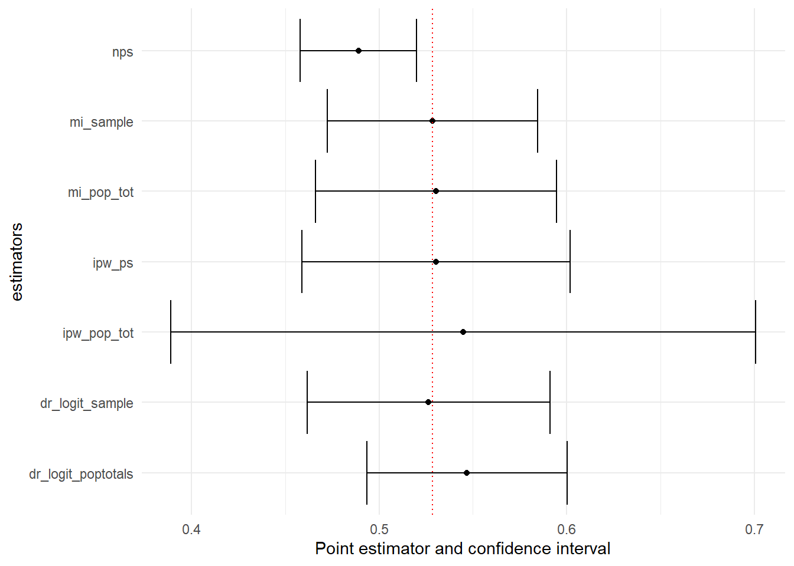
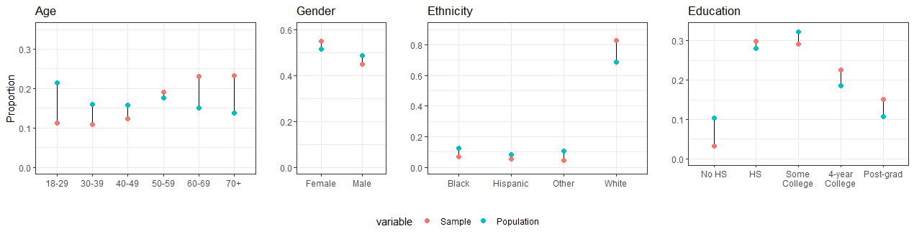
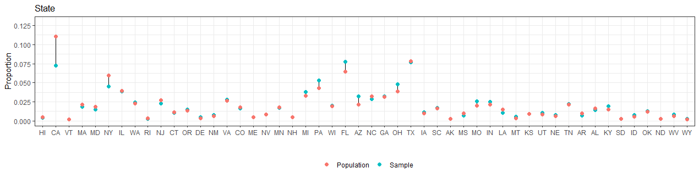
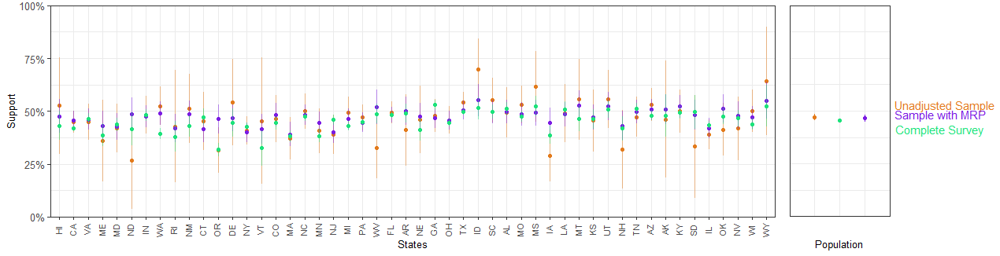

library(tidyverse)
library(ggplot2)
library(survey)
library(nonprobsvy)
library(PracTools)Inference with nonprobability samples
Introduction
This material is part of the Utrecht Summer School S16 - Survey Research: Statistical Analysis and Estimation.
In this practical session we learn how to do inference with nonprobability samples; in the first part we discuss frequentist approaches (Inverse probability weighting, mass imputation and doubly robust methods) and in the second part the Bayesian MRP.
Frequentist approaches
In these exercises we use the nonprobsvy package developed by Maciej Beręsewicz and Łukasz Chrostowski. You can find additional information about the package here:
Modern inference methods for non-probability samples with R;
GitHub repository;
A video of a workshop on nonprobsvy.
The data
In this exercise, we will analyze data from the 2003 U.S. Michigan Behavioral Risk Factor Surveillance Survey, available in the PracTools package. The dataset, named mibrfss, includes various demographic and health-related variables. We use this dataset as the basis in order to simulate a population of size 100000 and different sampling scenarios. In particular, the data we provide you with are:
Population Totals:
pop_tot.rda– Contains population totals.Probability Sample (PS):
p_sample.rda– A high-quality sample of size 10,000, assumed to be a simple random sample.Non-Probability Sample (NPS):
np_sample.rda– A sample of size 1,000 with self-selection and coverage issues.
We consider a subset of the variables available in the mibrfss dataset, namely:
SMOKE100: Smoked 100 or more cigarettes in lifetime (1 = Yes; 2 = No)AGECAT: Age group (1 = 18-24 years; 2 = 25-34 years; 3 = 35-44 years; 4 = 45-54 years; 5 = 55-64 years; 6 = 65+)INETHOME: Has access to the Internet at home (1 = Yes; 2 = No)EDCAT: Education level (1 = Did not graduate high school; 2 = Graduated high school; 3 = Attended college or technical school; 4 = Graduated from college or technical school)
For this exercise, we assume that the non-probability sample (NPS) was collected through social media advertisements. This approach introduces potential biases because only individuals with internet access and who are active on the specific social media platform could participate. Consequently, the NPS may suffer from both self-selection bias and coverage bias (since the sample is restricted to those with internet access and a presence on social media).
In contrast, we assume that the probability sample (PS) was obtained through a simple random sampling method. This sample is considered a high-quality reference sample, and for simplicity, we do not need to account for any design or calibration weights.
Objectives
Estimate the proportion of U.S. individuals aged 18+ who smoked 100 or more cigarettes in their lifetime
Compare different estimation techniques against the true population value of 52.85%
Preliminary analyses
- Before starting, load the necessary R packages:
- Import and prepare the data: Load the datasets and inspect the data. Pay attention to the data format.
load("p_sample.rda")
load("np_sample.rda")
load("pop_tot.rda")Task: Familiarize yourself with the datasets.
pop_tot(Intercept) AGECAT2 AGECAT3 AGECAT4 AGECAT5 AGECAT6
100000 13408 19554 22526 16875 21879
RACECAT2 RACECAT3 EDCAT2 EDCAT3 EDCAT4 INETHOME1
8255 5113 30925 28464 31668 65370 Compare the distribution of the covariates in the probability and nonprobability samples:
You can use
prop.table.
Click here to show the solution
# Age
prop.table(table(p_sample$AGECAT))
1 2 3 4 5 6
0.0564 0.1351 0.1992 0.2211 0.1718 0.2164 prop.table(table(np_sample$AGECAT))
1 2 3 4 5 6
0.126 0.143 0.219 0.241 0.152 0.119 # Race
prop.table(table(p_sample$RACECAT))
1 2 3
0.8699 0.0792 0.0509 prop.table(table(np_sample$RACECAT))
1 2 3
0.878 0.061 0.061 # Education
prop.table(table(p_sample$EDCAT))
1 2 3 4
0.0875 0.3109 0.2801 0.3215 prop.table(table(np_sample$EDCAT))
1 2 3 4
0.111 0.256 0.267 0.366 # Internet at home
prop.table(table(p_sample$INETHOME))
0 1
0.35 0.65 prop.table(table(np_sample$INETHOME))
0 1
0.04 0.96 Individuals in the nonprobability samples are more young, with more graduated from collage or technical school higher education and mainly with internet at home.
- Define the sampling desing: Specify the sampling designs for both the PS and NPS samples using the
svydesignfunction.
Click here to show the solution
ps_design <- svydesign(ids = ~ 1,data = p_sample)Warning in svydesign.default(ids = ~1, data = p_sample): No weights or
probabilities supplied, assuming equal probabilitynps_design <- svydesign(ids = ~ 1,data = np_sample)Warning in svydesign.default(ids = ~1, data = np_sample): No weights or
probabilities supplied, assuming equal probability- Estimate Proportion from Non-Probability Sample
Use the svymean and/or svyciprop functions to calculate the proportion and its confidence interval. Save it in a compare tibble where you will add the estimates obtained with different methods.
Click here to show the solution
svymean(~ SMOKE100, nps_design) mean SE
SMOKE100 0.489 0.0158np_est=svyciprop(~ SMOKE100, nps_design)
np_est 2.5% 97.5%
SMOKE100 0.489 0.458 0.52ci=confint(svyciprop(~ SMOKE100, nps_design))
compare = tibble(estimate=np_est[1],
lower_bound=ci[1],
upper_bound=ci[2],
method="nps")The estimate of the proportion of individuals who smoked 100 or more cigarettes in their lifetime from the non-probability sample (NPS) is 48.9%, with a 95% confidence interval ranging from 45.8% to 52.0%. Note that the confidence interval does not include the true population proportion.
To improve our estimate, we will apply and compare various estimation techniques.
Inverse-probability weighting
When a probability sample is available
First, we assume that we have access to high quality data from a reference probability sample. Implement IPW using the nonprob function with the following specifications:
Set up a selection model that includes the variables
AGECAT,RACECAT,EDCAT, andINETHOMEUse as
targetvariableSMOKE100Use the probability sample design you created before as input for
svydesignUse logistic regression in
method_selectionSave the estimate and the confidence interval
Click here to show the solution
ipw_logit_ps <-
nonprob(
selection = ~ as.factor(AGECAT) + as.factor(RACECAT) + as.factor(EDCAT) + as.factor(INETHOME),
target = ~ SMOKE100,
data = np_sample,
svydesign = ps_design,
method_selection = "logit"
)
#display
cbind(ipw_logit_ps$output, ipw_logit_ps$confidence_interval) mean SE lower_bound upper_bound
SMOKE100 0.5302948 0.03644835 0.4588573 0.6017322#save
compare <- compare %>%
bind_rows(tibble(estimate=ipw_logit_ps$output$mean,
lower_bound=ipw_logit_ps$confidence_interval$lower_bound,
upper_bound=ipw_logit_ps$confidence_interval$upper_bound,
method="ipw_ps"))The estimate is 53.02% (CI: 45.88% - 60.17%). This estimate is much closer to the true population proportion of 52.85%, and the confidence interval now includes the true value.
When only population information is available
Now we assume that only population totals are available.
- Implement IPW using the
nonprobfunction with the previous specifications but instead ofsvydesign, specify thepop_totals.
Click here to show the solution
ipw_logit_poptotals <-
nonprob(
selection = ~ AGECAT + RACECAT + EDCAT + INETHOME,
target = ~ SMOKE100,
data = np_sample,
pop_totals = pop_tot,
method_selection = "logit"
)
#display
cbind(ipw_logit_poptotals$output, ipw_logit_poptotals$confidence_interval) mean SE lower_bound upper_bound
SMOKE100 0.5449075 0.07954355 0.389005 0.70081#save
compare <- compare %>%
bind_rows(tibble(
estimate = ipw_logit_poptotals$output$mean,
lower_bound = ipw_logit_poptotals$confidence_interval$lower_bound,
upper_bound = ipw_logit_poptotals$confidence_interval$upper_bound,
method = "ipw_pop_tot"
))Now, the estimate is 54.49% but the confidence interval is quite large (CI: 38.9% - 70%). This wide interval suggests considerable uncertainty in the estimate.
Mass Imputation
When a probability sample is available
First, we assume that we have access to high quality data from a reference probability sample. Implement Mass Imputation using the nonprob function with the following specifications:
Set up an outcome model for
SMOKE100that includes the variablesAGECAT,RACECAT,EDCAT, andINETHOMEUse the probability sample design you created before as input for
svydesignGiven the outcome type, select the correct option for the
method_outcomeandfamily_outcomeSave the estimate and the confidence interval
Click here to show the solution
mi_sample <- nonprob(outcome = SMOKE100 ~ AGECAT + RACECAT + EDCAT + INETHOME,
data = np_sample,
svydesign = ps_design,
method_outcome = "glm",
family_outcome = "binomial")
#display
cbind(mi_sample$output, mi_sample$confidence_interval) mean SE lower_bound upper_bound
SMOKE100 0.5284921 0.02853384 0.4725668 0.5844174#save
compare <- compare %>%
bind_rows(tibble(
estimate = mi_sample$output$mean,
lower_bound = mi_sample$confidence_interval$lower_bound,
upper_bound = mi_sample$confidence_interval$upper_bound,
method = "mi_sample"
))The estimate is 52.84% (CI: 47.1% - 58.4%).
When only population information is available
Now we assume that only population totals are available.
- Implement Mass Imputation using the
nonprobfunction with the previous specifications but instead ofsvydesign, specify thepop_totals.
Click here to show the solution
mi_poptotals <- nonprob(outcome = SMOKE100 ~ AGECAT + RACECAT + EDCAT + INETHOME,
data = np_sample,
pop_totals = pop_tot,
method_outcome = "glm",
family_outcome = "binomial")
#display
cbind(mi_poptotals$output,mi_poptotals$confidence_interval) mean SE lower_bound upper_bound
SMOKE100 0.5303917 0.03275615 0.4661909 0.5945926#save
compare <- compare %>%
bind_rows(tibble(
estimate = mi_poptotals$output$mean,
lower_bound = mi_poptotals$confidence_interval$lower_bound,
upper_bound = mi_poptotals$confidence_interval$upper_bound,
method = "mi_pop_tot"
))The estimate is 53.04% (CI: 46.6% - 59.5%).
Doubly-robust inference
When a probability sample is available
First, we assume that we have access to high quality data from a reference probability sample. Implement the Doubly-robust method using the nonprob function with the following specifications:
Set up an outcome model for
SMOKE100that includes the variablesAGECAT,RACECAT,EDCAT, andINETHOMESet up a selection model that includes the variables
AGECAT,RACECAT,EDCAT, andINETHOMEUse the probability sample design you created before as input for
svydesignGiven the outcome type, select the correct option for the
method_outcomeandfamily_outcomeUse a logistic regression for the selection model
Save the estimate and the confidence interval
Click here to show the solution
dr_logit_sample <-
nonprob(
selection = ~ AGECAT + RACECAT + EDCAT + INETHOME,
outcome = SMOKE100 ~ AGECAT + RACECAT + EDCAT + INETHOME,
data = np_sample,
svydesign = ps_design,
method_selection = "logit",
method_outcome = "glm",
family_outcome = "binomial"
)
#display
cbind(dr_logit_sample$output, dr_logit_sample$confidence_interval) mean SE lower_bound upper_bound
SMOKE100 0.5263664 0.03303545 0.4616181 0.5911147#save
compare <- compare %>%
bind_rows(tibble(
estimate = dr_logit_sample$output$mean,
lower_bound = dr_logit_sample$confidence_interval$lower_bound,
upper_bound = dr_logit_sample$confidence_interval$upper_bound,
method = "dr_logit_sample"
))The estimate is 52.53% (CI: 46.2% - 59.1%).
When only population information is available
Now we assume that only population totals are available.
- Implement the Doubly-Robust approach again using the
nonprobfunction with the previous specifications but instead ofsvydesign, specify thepop_totals.
Click here to show the solution
dr_logit_poptotals <-
nonprob(
selection = ~ AGECAT + RACECAT + EDCAT + INETHOME,
outcome = SMOKE100 ~ AGECAT + RACECAT + EDCAT + INETHOME,
data = np_sample,
pop_totals = pop_tot,
method_selection = "logit",
method_outcome = "glm",
family_outcome = "binomial"
)
#display
cbind(dr_logit_poptotals $output, dr_logit_poptotals $confidence_interval) mean SE lower_bound upper_bound
SMOKE100 0.5467979 0.02724855 0.4933917 0.6002041#save
compare <- compare %>%
bind_rows(tibble(
estimate = dr_logit_poptotals $output$mean,
lower_bound = dr_logit_poptotals $confidence_interval$lower_bound,
upper_bound = dr_logit_poptotals $confidence_interval$upper_bound,
method = "dr_logit_poptotals"
))The estimate is 54.7% (CI: 49.3% - 60.0%).
Comparing the results
Finally compare the estimates. Use can use ggplot to plot the data in the compare table.
Click here to show the solution
compare %>%
ggplot(aes(
y = method,
x = estimate,
xmin = lower_bound,
xmax = upper_bound
)) +
geom_point() +
geom_vline(
xintercept = 0.5285,
linetype = "dotted",
color = "red"
) +
geom_errorbar() +
labs(x = "Point estimator and confidence interval", y = "estimators")+theme_minimal()
Bayesian approaches
Multilevel regression and post-stratification
We use the data from from the 2018 Cooperative Cooperative Congressional Election Study, a US nationwide survey designed by a consortium of 60 research teams and administered by YouGov. The data and the guide with information about the survey and the questionnaire area available here.
This tutorial is adapted from the Book MRP Case Studies that you can find here.
Objectives
- Estimate the proportion of individuals who support the cut in the Corporate Income Tax rate. The questionnaire item is the following:
Congress considered many changes in tax law over the past two years. Do you support or oppose each of the following?
CC18_325a Taxes – Cut the Corporate Income Tax rate from 39 percent to 21 percent. (Support/Oppose)
- Compare the estimates obtained with the unadjasted nonprobability sample, with the estimates we would obtain if we had a large probability sample and the estimates obtained with MRP
The data
The variables are the following:
state: 50 US statesage: Age in classes, 18-29, 30-39, 40-49, 50-59, 60-69, 70+male: Gender classified as male (1) or Female (2)eth: Ethnicity classified as (Non-hispanic) White, Black, Hispanic, Other (which also includes Mixed)educ: Education classified as No HS, HS, Some college, 4-year college, Post-gradregion: Geographical region classified in Northeast, North Central, South, and Westrepvote: Republican vote share in the 2016 presidential election
If you follow the book example, some data pre-processing are needed. Here, for simplicity, we use a ready-to-use version of the data.
Before starting, you need to install and load the following packages:
library(tidyverse)
library(rstan)
library(rstanarm)
library(dplyr)
library(readr)
library(ggplot2)
library(bayesplot)
library(ggalt)
library(reshape2)You have the following dataset available:
statelevel_predictors_df: for each one of the 50 US States contains therepvoteand theregioncces_biased_df: a nonprobability sample of size 5.000 from which we obtain un-adjusted estimates and then MRP estimatescces_all_df: is the full probability sample of size 59.693 observations that we use only for comparisonpoststrat_df_full: is the poststratification table with population counts constructed considering the state, the ethniticy, the gender, the age and the education of individuals. As we defined the levels for these variables, the poststratification table must have \(50 \cdot 6 \cdot 2 \cdot 4 \cdot 5 = 12.000\) rows. This means we actually have more rows in the poststratification table than observed units, which necessarily implies that there are some combinations in the poststratification table that we don’t observe in our nonprobability sample.
statelevel_predictors_df <- read_csv('statelevel_predictors.csv')
load("cces_all_df.rda")
load("cces_biased_df.rda")
load("poststrat_df_full.rda")Preliminary analyses
Compare the composition of the nonprobability sample with respect to the population characteristics (in the poststratification table)
Produce plots and tables.
One of the possible solutions follows.
Click here to show the solution
age_sample <-
cces_biased_df %>%
mutate(age = factor(age, ordered = FALSE)) %>%
group_by(age) %>%
summarise(n = n()) %>%
mutate(Sample = n /sum(n))
age_post <- poststrat_df %>%
mutate(age = factor(age, ordered = FALSE)) %>%
group_by(age) %>%
summarise(n_post = sum(n)) %>%
mutate(Population = n_post/sum(n_post))
age <-
inner_join(age_sample, age_post, by = "age") %>%
select(age, Sample, Population)
age_plot <- ggplot() + ylab("") + xlab("Proportion") +
theme_bw() + coord_flip() +
geom_dumbbell(data = age, aes(y = age, x = Sample, xend = Population)) +
geom_point(
data = melt(age, id = "age"),
aes(y = age, x = value, color = variable),
size = 2
) +
scale_x_continuous(limits = c(0, 0.35),
breaks = c(0, .1, .2, .3)) +
theme(legend.position = "none") +
ggtitle("Age")
# Gender
male_sample <-
cces_biased_df %>%
group_by(male) %>%
summarise(n = n()) %>%
mutate(Sample = n / sum(n))
male_post <-
poststrat_df %>%
group_by(male) %>%
summarise(n_post = sum(n)) %>%
mutate(Population = n_post / sum(n_post))
male <-
inner_join(male_sample, male_post, by = "male") %>%
select(male, Sample, Population) %>%
mutate(male = factor(
male,
levels = c(-0.5,+0.5),
labels = c("Female", "Male")
))
male_plot <- ggplot() + ylab("") + xlab("") +
theme_bw() + coord_flip() +
geom_dumbbell(data = male, aes(y = male, x = Sample, xend = Population)) +
geom_point(
data = melt(male, id = "male"),
aes(y = male, x = value, color = variable),
size = 2
) +
scale_x_continuous(limits = c(0, 0.6),
breaks = c(0, .2, .4, .6)) +
theme(legend.position = "none") + ggtitle("Gender")
# Ethnicity
ethnicity_sample <-
cces_biased_df %>%
group_by(eth) %>%
summarise(n = n()) %>%
mutate(Sample = n / sum(n))
ethnicity_post <-
poststrat_df %>%
group_by(eth) %>%
summarise(n_post = sum(n)) %>%
mutate(Population = n_post / sum(n_post))
ethnicity <-
inner_join(ethnicity_sample, ethnicity_post, by = "eth") %>%
select(eth, Sample, Population)
ethnicity$eth <- factor(
ethnicity$eth,
levels = c("Black", "Hispanic", "Other", "White"),
labels = c("Black", "Hispanic", "Other", "White")
)
ethnicity_plot <- ggplot() + ylab("") + xlab("") +
theme_bw() + coord_flip() +
geom_dumbbell(data = ethnicity, aes(y = eth, x = Sample, xend = Population)) +
geom_point(
data = melt(ethnicity, id = "eth"),
aes(y = eth, x = value, color = variable),
size = 2
) +
scale_x_continuous(limits = c(0, 0.9),
breaks = c(0, .2, .4, .6, 0.8)) +
theme(legend.position = "none") + ggtitle("Ethnicity")
# Education
educ_sample <-
cces_biased_df %>%
mutate(educ = factor(educ, ordered = FALSE)) %>%
group_by(educ) %>%
summarise(n = n()) %>%
mutate(Sample = n / sum(n))
educ_post <-
poststrat_df %>%
mutate(educ = factor(educ, ordered = FALSE)) %>%
group_by(educ) %>%
summarise(n_post = sum(n)) %>%
mutate(Population = n_post /sum(n_post))
educ <- inner_join(educ_sample, educ_post, by = "educ") %>%
select(educ, Sample, Population)
educ$educ <- factor(
educ$educ,
levels = c("No HS", "HS", "Some college", "4-Year College", "Post-grad"),
labels = c("No HS", "HS", "Some\nCollege", "4-year\nCollege", "Post-grad")
)
educ_plot <- ggplot() + ylab("") + xlab("") +
theme_bw() + coord_flip() +
geom_dumbbell(data = educ, aes(y = educ, x = Sample, xend = Population)) +
geom_point(
data = melt(educ, id = "educ"),
aes(y = educ, x = value, color = variable),
size = 2
) +
scale_x_continuous(limits = c(0, 0.33),
breaks = c(0, .1, .2, .3)) +
theme(legend.position = "none") + ggtitle("Education")
# State
state_sample<- cces_biased_df %>%
group_by(state) %>%
summarise(n = n()) %>%
mutate(Sample = n/sum(n))
state_post <- poststrat_df %>%
group_by(state) %>%
summarise(n_post = sum(n)) %>%
mutate(Population = n_post/sum(n_post))
state <- full_join(state_sample, state_post, by = "state")
state=state %>% inner_join(statelevel_predictors_df %>% select(state,repvote))Joining with `by = join_by(state)`states_order <- state$repvote
state$state <- fct_reorder(state$state, states_order)ggpubr::ggarrange(age_plot, male_plot, ethnicity_plot, educ_plot, nrow=1,common.legend = TRUE, legend="bottom")state %>%
ggplot() +
ylab("") + xlab("Proportion") + theme_bw() + coord_flip() +
geom_dumbbell(aes(y = state, x = Sample, xend = Population)) +
geom_point(aes(y = state, x = Sample, color = "Sample"), size = 2) +
geom_point(aes(y = state, x = Population, color = "Population"), size = 2) +
scale_x_continuous(limits = c(0, 0.13), breaks = c(0, .025, .05, .075, .1, .125)) + ggtitle("State") +
theme(legend.position = "bottom", legend.title=element_blank())

We can see that in the nonprobability samples individuals tends to be older, male, white, less educated and from Republican states.
The Mister: MR
In this section you need to implement a multilevel regression in order to predict the outcome (
taxred) based on a set of factors.Use the
stan_gmlerfunctionInclude in the model varying intercepts
(1 | x)for:age,eth,educ, andstateInclude interactions
(1 | x1:x2)betweenmaleandeth,educandageandeducandethInclude as state-level predictors also
repvoteandregionUse a logistic model
Click here to show the solution
library(rstanarm)
fit <- stan_glmer(taxred ~ (1 | state) + (1 | eth) + (1 | educ) + (1 | age) + male +
(1 | male:eth) + (1 | educ:age) + (1 | educ:eth) +
repvote + factor(region),
family = binomial(link = "logit"),
data = cces_biased_df,
prior = normal(0, 1, autoscale = TRUE),
prior_covariance = decov(scale = 0.50),
adapt_delta = 0.99,
refresh = 0,
seed = 1010)Running this code might be computational expensive, thus you can directly load the data with the results:
fit <- readRDS("my_fit.rds")The P: Postststratification
The second step is to poststratify.
Draw 4000 values from the posterior predictive distribution using
posterior_epredusing thepoststrat_dfCompute the vector of MRP estimates for the 4000 draws, remember from the slides
pred * n/N. Note that the predictions comes from 4000 draws from the predictive distribution, thus you have a matrixCompute the final general MRP estimates taking the mean and the sd
Click here to show the solution
epred_mat <- posterior_epred(fit, newdata = poststrat_df, draws = 4000)
mrp_estimates_vector <- epred_mat %*% poststrat_df$n / sum(poststrat_df$n)
mrp_estimate <- c(mean = mean(mrp_estimates_vector), sd = sd(mrp_estimates_vector))- Compute the mean and the standard error from the row nonprobability data and from the larger probability sample data (for a bernoulli distribution it is
sqrt(p*(1-p)/n)
Click here to show the solution
get_se_bernoulli <- function(p, n){
return(sqrt(p*(1-p)/n))
}
cces_estimate <- c(mean = mean(cces_biased_df$taxred), se = get_se_bernoulli(mean(cces_biased_df$taxred), nrow(cces_biased_df)))
full_cces_estimate <- c(mean = mean(cces_all_df$taxred), se = get_se_bernoulli(mean(cces_all_df$taxred), nrow(cces_all_df)))Compute the MRP and the unadjasted estimates for each of the 50 US states
Compute the estimates for each of the 50 US States using the probability sample data
Use the following code. Take your time to understand it
Click here to show the solution
state_abb <- datasets::state.abb
states_df <- data.frame(
state = state_abb,
mrp_estimate = NA,
mrp_estimate_se = NA,
cces_estimate = NA,
cces_estimate_se = NA,
full_cces_estimate = NA,
full_cces_estimate_se = NA,
n_sample = NA,
n_full = NA
)
for (i in 1:nrow(states_df)) {
filtering_condition <-
which(poststrat_df$state == states_df$state[i])
state_epred_mat <- epred_mat[, filtering_condition]
k_filtered <- poststrat_df[filtering_condition,]$n
mrp_estimates_vector <-
state_epred_mat %*% k_filtered / sum(k_filtered)
states_df %>% count(state)
# MRP estimate
states_df$mrp_estimate[i] <- mean(mrp_estimates_vector)
states_df$mrp_estimate_se[i] <- sd(mrp_estimates_vector)
# Biased sample survey unadjusted estimate
states_df$cces_estimate[i] <-
mean(filter(cces_biased_df, state == states_df$state[i])$taxred)
states_df$n_sample[i] <-
nrow(filter(cces_biased_df, state == states_df$state[i]))
states_df$cces_estimate_se[i] <-
get_se_bernoulli(states_df$cces_estimate[i], states_df$n_sample[i])
# Full PS sample survey unadjusted estimate
states_df$full_cces_estimate[i] <-
mean(filter(cces_all_df, state == states_df$state[i])$taxred)
states_df$n_full[i] <-
nrow(filter(cces_all_df, state == states_df$state[i]))
states_df$full_cces_estimate_se[i] <-
get_se_bernoulli(states_df$full_cces_estimate[i], states_df$n_full[i])
}Compare the results
- Compare the results using
ggplot
Click here to show the solution
compare1 <- ggplot(data = states_df) +
geom_point(aes(x = state, y = cces_estimate), color = "#E37B1C") +
geom_errorbar(
aes(
ymin = cces_estimate - 2 * cces_estimate_se,
ymax = cces_estimate + 2 * cces_estimate_se,
x = state
),
alpha = .5,
width = 0,
color = "#E37B1C"
) +
geom_point(data = states_df,
aes(x = state, y = mrp_estimate),
color = "#7B1CE3") +
geom_errorbar(
data = states_df,
aes(
ymin = mrp_estimate - 2 * mrp_estimate_se,
ymax = mrp_estimate + 2 * mrp_estimate_se,
x = state
),
alpha = .5,
width = 0,
color = "#7B1CE3"
) +
geom_point(aes(x = state, y = full_cces_estimate), color = "#1CE37B") +
geom_errorbar(
data = states_df,
aes(
ymin = full_cces_estimate - 2 * full_cces_estimate_se,
ymax = full_cces_estimate + 2 * full_cces_estimate_se,
x = state
),
alpha = .5,
width = 0,
color = "#1CE37B"
) +
scale_y_continuous(
breaks = c(0, .25, .5, .75, 1),
labels = c("0%", "25%", "50%", "75%", "100%"),
expand = c(0, 0)
) +
coord_cartesian(ylim = c(0, 1)) +
theme_bw() +
labs(x = "States", y = "Support") +
theme(
legend.position = "none",
axis.title = element_text(size = 10),
axis.text.y = element_text(size = 10),
axis.text.x = element_text(
angle = 90,
size = 8,
vjust = 0.3
),
legend.title = element_text(size = 10),
legend.text = element_text(size = 10)
)
compare2 <- ggplot(data = data.frame()) +
geom_point(aes(y = cces_estimate[1], x = .25), color = "#E37B1C") +
geom_errorbar(
data = data.frame(),
aes(
y = cces_estimate[1],
x = .25,
ymin = cces_estimate[1] - 2 * cces_estimate[2],
ymax = cces_estimate[1] + 2 * cces_estimate[2]
),
width = 0,
color = "#E37B1C"
) +
geom_text(
aes(x = Inf, y = cces_estimate[1] + 0.06, label = "Unadjusted Sample"),
hjust = -.05,
size = 4,
color = "#E37B1C"
) +
geom_point(aes(y = mrp_estimate[1], x = .75), color = "#7B1CE3") +
geom_errorbar(
data = data.frame(),
aes(
y = mrp_estimate[1],
x = .75,
ymin = mrp_estimate[1] - 2 * mrp_estimate[2],
ymax = mrp_estimate[1] + 2 * mrp_estimate[2]
),
width = 0,
color = "#7B1CE3"
) +
geom_text(
data = data.frame(),
aes(x = Inf, y = mrp_estimate[1] + 0.02, label = "Sample with MRP"),
hjust = -.05,
size = 4,
color = "#7B1CE3"
) +
scale_y_continuous(
breaks = c(0, .25, .5, .75, 1),
labels = c("0%", "25%", "50%", "75%", "100%"),
limits = c(0, 1),
expand = c(0, 0)
) +
geom_point(data = data.frame(),
aes(y = full_cces_estimate[1], x = .5),
color = "#1CE37B") +
geom_errorbar(
data = data.frame(),
aes(
y = full_cces_estimate[1],
x = .5,
ymin = full_cces_estimate[1] - 2 *
full_cces_estimate[2],
ymax = full_cces_estimate[1] + 2 *
full_cces_estimate[2]
),
width = 0,
color = "#1CE37B"
) +
geom_text(
data = data.frame(),
aes(x = Inf, y = full_cces_estimate - 0.04, label = "Complete Survey"),
hjust = -.06,
size = 4,
color = "#1CE37B"
) +
scale_y_continuous(
breaks = c(0, .25, .5, .75, 1),
labels = c("0%", "25%", "50%", "75%", "100%"),
limits = c(0, 1),
expand = c(0, 0)
) +
scale_x_continuous(
limits = c(0, 1),
expand = c(0, 0),
breaks = c(.25, .75)
) +
coord_cartesian(clip = 'off') +
theme_bw() +
labs(x = "Population", y = "") +
theme(
legend.position = "none",
axis.title.y = element_blank(),
axis.title.x = element_text(size = 10, margin = margin(
t = 19,
r = 0,
b = ,
l = 0
)),
axis.text = element_blank(),
axis.ticks = element_blank(),
legend.title = element_text(size = 10),
legend.text = element_text(size = 10),
plot.margin = margin(5.5, 105, 5.5, 5.5, "pt")
)Scale for y is already present.
Adding another scale for y, which will replace the existing scale.bayesplot_grid(compare1,compare2,
grid_args = list(nrow=1, widths = c(5,1.4)))
Acknowledgments
Some of the exercises are adapted from:
Valliant, R., Dever, J. A., & Kreuter, F. (2018). Practical tools for designing and weighting survey samples (Vol. 1). New York: Springer.
The MRP Case Studies online book that you can find here.